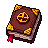
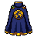

Area diaries
One diary for every map: 21 of them, from the Yard to Daredevil Peak, each with four tiers, Easy, Medium, Hard and Elite.
A diary is the map's to-do list: its monsters, its bosses, its quests, what can be gathered there, its shortcut and its lockbox, and being there
for its world events. Finishing a tier gives a perk that only works on that map, an XP lamp and a medal. All 252 tasks are things the maps
really have, read from the rules (tools/diary-mock/scan.mjs), so a diary is a reason to go back to a map, never a chore list
of things that don't exist.
The diary
It opens from a new button beside the collection log. Down the left are the 21 maps by level, each with its emblem framed in the colour of the best tier you've finished; on the right, the map's four tiers and their tasks. Below is calvin's diary as an example: click a map and a tier. A task you can't do yet says what it needs in red, one you could do now in green; any event marks an event task and PvP a task that needs another player, and v1.1 one that uses something v1.1 adds.

Area diariesWhat a tier gives
Only Elite finishes go to chat; every other task is a toast for you alone. With 21 diaries, that's still rare.
Every perk
Each one makes that map better to work in, never the whole game, and each is a number the game already reads somewhere (a bite chance, a price, a mining speed, a chest's rolls), so none needs a new system. Nothing here touches a bet or a payout's odds.
Event tasks: any one of several
A task like "be on the Mire when a world event there ends" is done by whichever event happens there first: a Shooting Star landing, a Wanted poster, the Jackpot Thief, the Yard's raid or Flood, the Ice Wyrm, the Pumpkin King. Each map's list is below; every map with an event task has at least two that can do it, so someone who plays at odd hours still gets one within a few days. Maps where only one kind of event can happen (the Carnival, the Vault, the Depths and the Ridge only ever get Wanted posters) have no event task at all. It counts if you were on the map when the event ended, so being there is the task, not winning it.
What v1.1 adds to them
The diaries go out after v1.1, so they lean on it: of the tasks use something v1.1 adds, on every map but one. The new thieving is the biggest share (a pocket on most maps, the lockbox on every map that has one), then the new agility (each map's shortcut or nook, the two back ways, Thrill Hill's three runs and the cannon), then work clothes (a piece of the set that drops on that map, and a whole set for the Yard's Elite). Each one replaced the weakest task in its tier: a second chop of the same tree, a "kill it 25 times", the Pumpkin King that only counts in October.
The Wilderness: with PvP
The Wilderness and the Deep Wild have diaries like every other map, and their Medium, Hard and Elite tiers need PvP: kill a player there, ten players, three in one trip, someone ten combat levels above you. They're the only diaries that do, and their Easy tiers never need another player, so anyone can start them. Their perks make the Wild a little kinder to the people who live there: losing 20% on a death instead of 25%, seeing who is in before you go down, keeping one more item in the Deep Wild.
Something at every level
Tasks counted by the highest level they need. A diary per map spreads them along the whole road: the Yard's are for the first hour, Old Rex's Lair's for the road past 99.
The cape slot
A new square on the paper doll, under the figure: the eleventh. It's for what you've done, not for fighting: a cape carries no accuracy, strength or defence, so it never becomes the slot everyone fills with the best stats. It shows on your character in the world, over your look.

Grand Tour cape- What else goes there later: the 99 capes from the Road Past 99 (mockup 1), one per skill at 99, and event or Store capes, each with its own PixelLab art.
- Drawn on you: a cape is a layer under the look, drawn for each body and facing, the way the vanity layer already works. That's the art job for each cape.
- Swapping: click the square like any other. Taking it off keeps the cape; nothing is lost.
Showing it off
A row of medals on the profile, under the trading card: 21 of them. Hover one for the tiers done. "Diary tasks done" also goes on the hiscores beside total level, so someone who has been everywhere ranks the way a fighter does on combat.
Building it
- A task is a check on something the server already sees: a kill, a gather, a craft, a quest handed in, a boss kill, a pocket, a crossing, a lockbox, a lap, a PvP kill, being on the map when an event ends. Each is one line where that thing already happens, like the work clothes' drops.
- Progress is one number per map, a bit per task, saved with the character. Counted tasks ("kill 100 Bog Gnashers") use the kill and gather counts the stats already keep.
- On launch day what you've already done counts: quests finished, levels, the collection log, boss kill counts, PvP kills. Nobody starts from zero.
- Perks are flags read where the game already reads a buff: a bite chance, a price, a mining speed, a chest's rolls, the death drop in the Wild.
- The cape slot is an eleventh square in the doll and a "cape" slot in the rules; the Grand Tour cape is its first item.
- Performance: a task check is a few comparisons on things already happening. The diary window is fetched when it's opened, never at login, the way the collection log is.
- Art: 21 map emblems (8 drawn; one each for the other 13), the book, the cape (drawn) and four lamps, all PixelLab. About 20 generations.
- Size: bigger than work clothes. The 252 checks are the bulk; a next bundle on its own.
Still open: whether the Grand Tour asks for the two Wilderness Elites (above), and the lamp sizes.